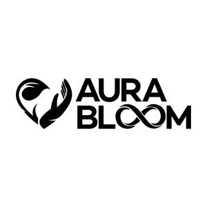

Trade Mark Journal No.2025/011 14 March 2025
UK00004166701 27 February 2025 (3)

- Class 3
- Body cream; Body mask cream; Body cream soap; Body creams; Body lotion; Body cream for cosmetic use; Face and body creams; Body butter; Body firming creams; Scented body creams; Body milk; Skin cream; Body mask lotion; Body creams [cosmetics]; Body and facial creams [cosmetics]; Body lotions; Creams (Non-medicated -) for the body; Body moisturisers; Moisturising body lotion [cosmetic]; Moisture body lotion; Body and facial butters; Face and body lotions; Hand and body butter; Moisturizing body lotions; Facial cream; Scented body lotions and creams; Body butters; Body soufflé; Skin cleansing cream; Hair cream; Beauty creams for body care; Toning lotion, for the face, body and hands; Skin cream [for cosmetic use]; Body powder; Body soap; Body wash; Body and facial oils; Shaving cream; Lotions for face and body care; Body milks; Cuticle cream; Anti-aging cream; Bath cream; Scented body lotions; Cosmetic body mud; Body mask powder; Body glitter; Body spray; Lip cream; Body deodorants; Hair and body wash; Cleansing cream; Body shampoos; Skin cleansing cream [non-medicated]; Body mist; Body and facial gels [cosmetics]; Body scrub; Body scrubs; Body polish; Body oil; Shower cream; Sunscreen cream; Facial cream [for cosmetic use]; Body oil [for cosmetic use]; Body sprays; Cream for whitening the skin; Whitening the skin (Cream for -); Make-up for the face and body; Face and body glitter; Body emulsions; Hand cream; Horse oil cream for skin care; Body gels; Body washes; Body oils; Anti-wrinkle cream; Face cream (Non-medicated -); Body oils [for cosmetic use]; Cosmetic body scrubs; Body scrubs [cosmetic]; Body powder (Non-medicated -); Body cleansing foams; Body masks; Eye cream; Body massage oils; Body paint (cosmetic); Baby body milks; Exfoliating scrubs for the body; Cold cream; Hair removing cream; Cream foundation; Non-medicated body soaks; Shoe cream; Body gels [cosmetics]; Aftershave moisturising cream; Deodorants for body care; Scented body spray; Body oil spray; Body sprays [non-medicated]; Exfoliating body scrub; Nail cream; Camouflage cream; Boot cream; Anti-wrinkle cream [for cosmetic use]; Mattifying gel cream; Facial creams; Creams for firming the skin; Wrinkle resistant cream; Cream soaps; Night cream; Day cream; Night creams; Nappy cream [non-medicated]; Night creams [cosmetics]; Cold cream, other than for medical use; Non-medicated diaper rash cream; Non-medicated scalp treatment cream; Cream cleaners (Non-medicated -); Non-medicated foot cream; Shower creams; Bath creams; Moisturizing creams; Moisturizing milk; Anti-wrinkle creams; Fair complexion cream; Moisturising creams; Day creams; Shaving creams; Massage creams, not medicated; Bath creams (Non-medicated -); Cold creams; Base cream; Suntan creams.
JHX Enterprises Ltd